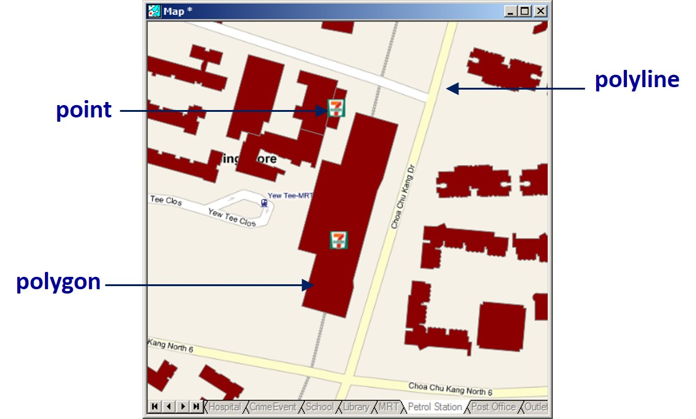
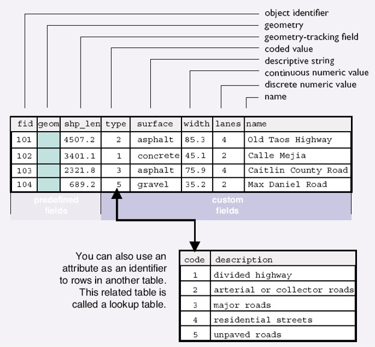
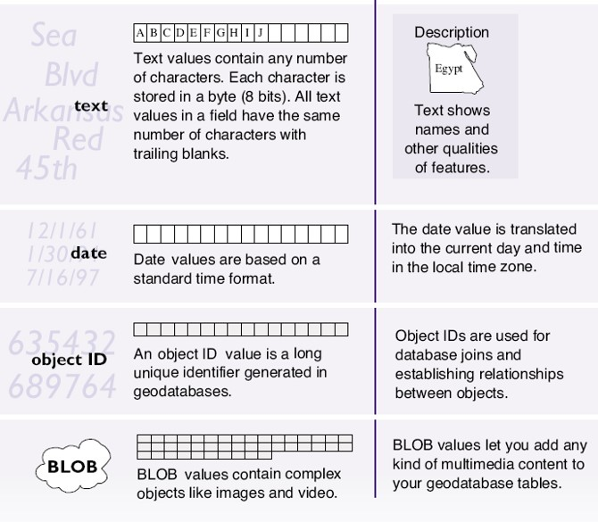
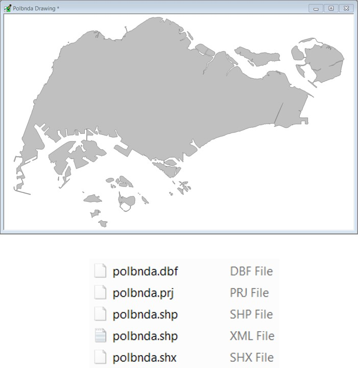
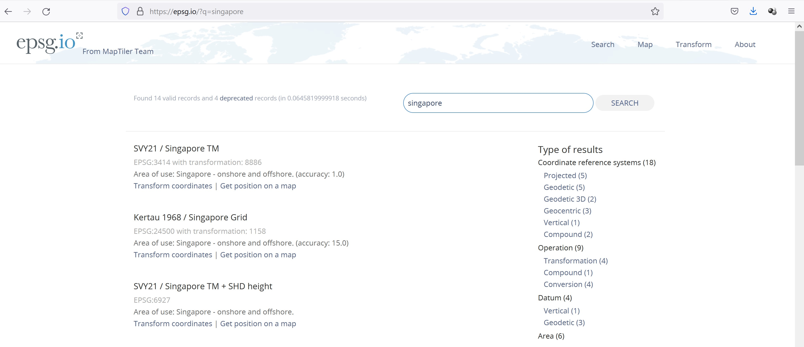

Lesson 2: The Devil is in the Data: Collection, representation, and modelling
Dr. Kam Tin Seong Assoc. Professor of Information Systems
School of Computing and Information Systems, Singapore Management University
2025-01-19
What will you learn from this course?
Getting to Know GIS Data Models
Vector Data Model
Raster Data Model
Georeferencing
Geographic Coordinate Systems
Projected Coordinate Systems
Geocoding
GeoHash
Sources of GIS data
Getting to Know GIS Data Models
Basic concept of geographical data
Basic GIS data models
Vector data models
Spaghetti data models
Topological data models
Raster data models
Discrete Objects and Continuous Fields
Two ways of conceptualizing geographic variation
The most fundamental distinction in geographic representation
Discrete objects
The world as a table-top
Objects with well-defined boundaries
Discrete Objects
Countable, persistent through time, perhaps mobile
Human-made objects
Office buildings, houses, bus stops, etc
Biological organisms
Animals, trees
Continuous Fields
Properties that vary continuously over space
Value is a function of location
Property can be of any attribute type, including direction
Elevation as the archetype
A single value at every point on the Earth’s surface
The source of metaphor and language
Any field can have slope, gradient, peaks, pits
Basic GIS Data Models
Vector, implementation of discrete object conceptual model
Point, line and polygon representations
Widely used in cartography, and network analysis
Raster, implementation of field conceptual model
Array of cells used to represent objects
Useful as background maps and for spatial analysis
Vector Data Models
Used to represent points, lines, and areas
All are represented using coordinates
One per point
Lines as polylines
Straight lines between points
Areas as polygons
Straight lines between points, connecting back to the start
Point locations recorded as coordinates
Vector Database
Building footprints are represented by polygon features, road reserves represented by polyline features, and convenient stores are represented by point features

Georelational Vector Data Model
Stores spatial and attribute data separately in a split system:
spatial data (“geo”) in graphic fields, and
attribute data (“relational”) in a relational database
Attribute Table

Types of Attributes: Numerical
Other Types of Attributes

Vector Data File Format: shapefile
A shapefile is a simple, nontopological format for storing the geometric location and attribute information of geographic features.
Geographic features in a shapefile can be represented by points, lines, or polygons (areas).
To find out more about shapefile, visit this link .

Limitation of shapefile
It is proprietary (closed and controlled by ESRI).
It’s a multifile format (.shp,.dbf.,.shx,.prj, encoding, other indexes, etc.) (everybody knows the problem with GIS newbies sending you solely the .shp… 😉).
Attribute names are limited to 10 characters and only 255 attributes are allowed in .dbf.
Limited data types. Data types are limited to float, integer, date and text with a maximum 254 characters.
Unknown character set. There is no way to specify the character set used in the database.
It’s limited to 2GB of file size. Although some tools are able to surpass this limit, they can never exceed 4GB of data.
Single geometry type per file. There is no way to save mixed geometry features.
More complicated data structures are impossible to save. It’s a “flat table” format.
There is no way to store 3D data with textures or appearances such as material definitions. There is also no way to store solids or parametric objects.
Projections definition. They are incompatible or missing.
Line and polygon geometry type, single or multipart, cannot be reliably determined at the layer level, it must be determined at the individual feature level.
Other Vector GIS File Formats
MapInfo TAB format - MapInfo’s vector data format using TAB, DAT, ID and MAP files.
Personal Geodatabase - Esri’s closed, integrated vector data storage strategy using Microsoft’s Access MDB format
A raster can contain one or more bands. One type of multi-band raster dataset that is familiar to many of us is a color image.
A basic color image consists of three bands: red, green, and blue. Each band represents light reflected from the red, green or blue portions of the electromagnetic spectrum.
The pixel brightness for each band, when composited creates the colors that we see in an image.
Raster Data Format
GeoTIFF: TIFF variant enriched with GIS relevant metadata.
JPEG2000: Open-source raster format. A compressed format, allows both lossy and lossless compression.
BIL, BIP, and BSQ raster files: image format linked with satellite derived imagery, namely: BIL (Band Interleaved by Line),BIP (Band Interleaved by Pixel) and BSQ (Band Sequential). To learn more about these three data types, read Fundamental of raster data, ESRI.
ADRG: National Geospatial-Intelligence Agency (NGA)’s ARC Digitized Raster Graphics.
ECW: Enhanced Compressed Wavelet (from ERDAS). A compressed wavelet format, often lossy.
MrSID: Multi-Resolution Seamless Image Database (by Lizardtech). A compressed wavelet format, allows both lossy and lossless compression.
Unique Properties of GIS Data
Geographical reference
Cartographic generalisation
GIS data accuracy and uncertainty
Coordinate Systems and Map Projections
What is a coordinate system?
A coordinate system is a reference system used to represent the locations of geographic features, imagery, and observations such as GPS locations within a common geographic framework.
Each coordinate system is defined by:
Its measurement framework which is either geographic (in which spherical coordinates are measured from the earth’s center) or planimetric (in which the earth’s coordinates are projected onto a two-dimensional planar surface).
Unit of measurement (typically feet or meters for projected coordinate systems or decimal degrees for latitude–longitude).
The definition of the map projection for projected coordinate systems.
What is a coordinate system?
Other measurement system properties such as a spheroid of reference, a datum, and projection parameters like one or more standard parallels, a central meridian, and possible shifts in the x- and y-directions.
There are two common types of coordinate systems used in mapping, namely:
geographic coordinate systems, and
projected coordinate systems
Geographical Coordinate Systems (GCS)
GCS define locations on the earth using a three-dimensional spherical surface. For example, WGS84. They provides accuracy position information.
Unit of measurement will be in either decimal degree or degree-minute-second format.
GCS, however, are not appropriate for distance and area measurements.
In this figure, it is clear that 1 degree distance at the north pole is relatively shorter than 1 degree at the equator.
Projected Coordinate Systems (PCS)
A PCS based on a map projection such as transverse Mercator, Albers equal area, or Robinson, all of which (along with numerous other map projection models) provide various mechanisms to project maps of the earth’s spherical surface onto a two-dimensional Cartesian coordinate plane.
Projected Coordinate Systems
PCS are sometimes referred to as map projections. For example, SVY21, the national projected coordinate system of Singapore.
PCS provides consistent length and area measurement across space. Hence, it is important to transform a geospatial data from GCS to PCS before performing geospatial analysis.
There are at least three coordinate systems commonly used in Singapore. They are svy21, Kertau Cassini 1968, and Rectified Skewed Orthomorphic (RSO). RSO is used in military and topographical mapping and svy21 is used for land and engineering surveying, cadastre, landuse and infrastructure mapping.
EPSG Reference System
epsg.io provides a comprehensive list of country coordinate systems such as svy21.

What is geocoding
Reference data: features with address attributes points, lines, polygons.
GeoHash is a public domain geocode system invented in 2008 by Gustavo Niemeyer.
It encodes a geographic location into a short string of letters and digits.
It is a hierarchical spatial data structure which subdivides space into buckets of grid shape, which is one of the many applications of what is known as a Z-order curve, and generally space-filling curves.
It is important to note that the 6-digit postal code used in Address-point data is in character data type and not numerical data type. This is because at downtown area such as Outram Plannign subzone, the postal codes start with 0, as a result, if numeric data type is used. These postal codes will truncated into five digits.